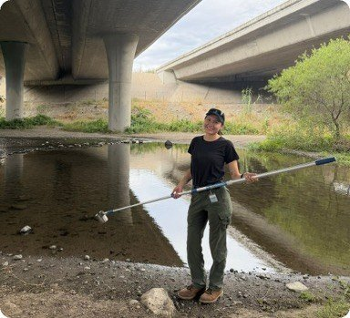
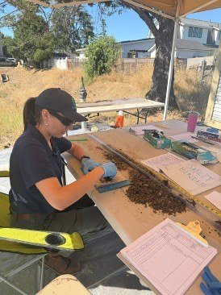
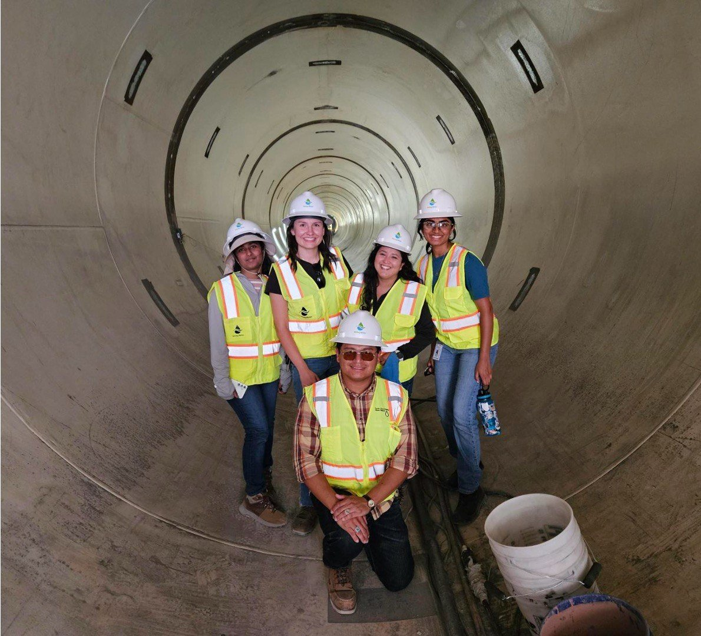
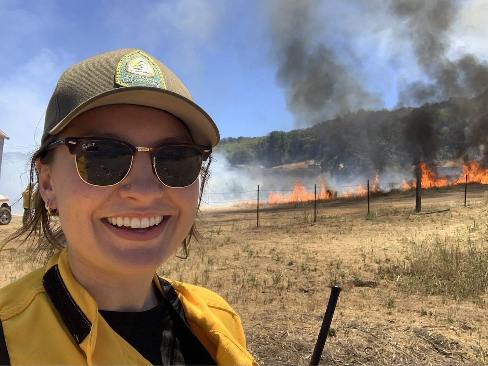

About
Background and professional experience

Research
Remote sensing and machine learning for evapotranspiration

GIS portfolio
Maps, models and field data
Where I've worked
WaterLand and fireResearch and teaching
In the field



